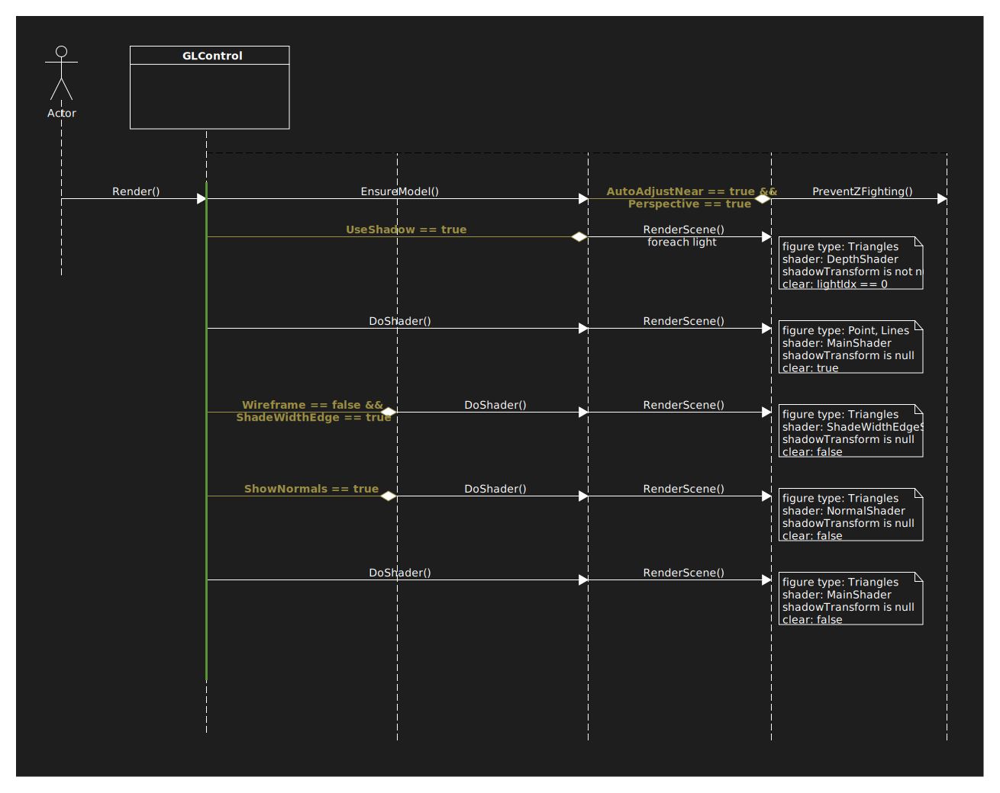

Namespace SearchAThing.OpenGL.Core
Classes
- BBox
Bounding box of a set of points.
It can be an oriented bounding box if created with custom coordinate system, WCS elsewhere is used as default.
- DebugVtxMgr
Debug object containing a vertex manager to allow create figures and a gl control to allow invalidate the view.
Used for debug purpose.
- DummyRenderDevice
A render device that doesn't write GL pixel anywhere.
This object can be used for testing purpouse.
- GLContext
Gl context object with purpose to:
- create Silk.NET gl window Silk.NET.Windowing.IWindow.
- expose Silk.NET.OpenGL.GL interface.
- handle font char cache through instance of GLFontCharManager.
- load GLPipeline objects used by the framework.
- handle environment variable "OPENGL_LIBRARY_PATH" for mesa win library } loading. Useful for windows guest on virtualbox linux host.
- handle gl debug messages by using DebugMessageCallback.
- create Silk.NET gl window Silk.NET.Windowing.IWindow.
- GLControl
Provides basic opengl abstraction to create entities such as GLPoint, GLLine and GLTriangle. It provides high level functions to manage camera view and related pan/zoom functions.
The Invalidate(InvalidateEnum) emit a RenderInvalidated event that SearchAThing.OpenGL.GUI.AvaloniaGLControl listen to invalidte its visual.

- GLFigureBase
Base abstract class for point, line, triangle figures.
- GLFigureTypeBase<P>
Template typed GLPrimitiveBase figure base operations such as Add and Remove primitives from the figure.
- GLFontChar
Holds a single font character bitmap and allocated texture.
- GLFontCharManager
Gl font char manager, allocated through gl context.
It manage the cache of GLFontChar avoid there are duplicates of the same gl font char for the same font/character.
- GLLine
Opengl line primitive.
- GLLineFigure
Specialization of typed figure within the GLLine primitive.
- GLMatrixes
Helper class to store model/view/projection and camera pos/target/up in a single object.
- GLModel
Gl model.
- contains the associated GLVertexManager
- the list of model figures GLFigureBase
- point lights GLPointLight.
- custom vertex managers AddCustomVertexManager(GLVertexManager)
- contains the default build model action.
- contains the associated GLVertexManager
- GLPipeline
Gl pipeline object.
Contains vertex, geometry and fragment shaders where defined and helper method to set uniforms, attributes ans storage blocks.
- GLPointFigure
Specialization of typed figure within the GLPoint} primitive.
- GLPointLight
Gl point light.
- GLShaderStorageBlock<T>
Manage mapping of given template typed data to gpu memory.
- GLText
Gl text object.
- GLTextCharFigure
Triangles figure with texture mapped to represent a char.
- GLTexture2D
Handle reference to gl texture.
- GLTriangleFigure
Specialization of typed figure within the GLTriangle primitive.
- GLVertexArrayObject<PacketStructure>
Helper to define and enable Vertex Array Object in order to declare how to access vertex buffer object at i-th packet structure components.
- GLVertexBufferObject<T>
Manage mapping of given template typed data to gpu memory.
- Line
Geometric entity 3d line.
Internally encoded as From and V vectors, where To = From + V.
Can be created through static methods FromTo(in Vector3, in Vector3) and PointV(in Vector3, in Vector3).
- MouseStart
Helper class to save GLControl gl matrixes and a screen start point mainly used for pan and rotate at the beginning of operation.
- OffscreenRenderDevice
Render device for offscreen mode that acts as a bitmap file writer.
- Plate
Plate geometry composed by four vertexes, used primarly to be converted in triangles with GetTriangles(Plate, in Color?, bool).
- PointTransformNfo
Helper class used by SearchAThing.OpenGL.GUI.GLDevTool.
Given the vertex, size, gl matrixes it will update object, normal, local, world, eye, clip, screen transformed coordinates.
- RayCastHitTest
Hold raycast hit test info.
Intersect(Line, float, GLFigureBase)
Structs
- GLMatrix4x4Struct
Structure that contains a matrix4x4.
It will be used by the RenderVertexManager(Func<GLFigureBase, bool>, GLPipeline, GLVertexManager, GLPointLightStruct[], GLMatrix4x4Struct[]) and loaded into gpu pipeline through GLShaderStorageBlock<T>.
- GLPointLightStruct
Structure that contains gl point light info.
It will be used by the RenderVertexManager(Func<GLFigureBase, bool>, GLPipeline, GLVertexManager, GLPointLightStruct[], GLMatrix4x4Struct[]) and loaded into the gpu pipeline through GLShaderStorageBlock<T>
- GLVertexStruct
Structure used by the vertex manager when register a vertex inside it.
This structure has an explicit layout for unmanaged access by the gpu and its used in GLControl during the phase of rendering.
- MaterialProperties
Describe the strength (0..1) of the ambient, diffuse, specular light effects.
Interfaces
- IGLContextObject
General inteface for objects that carrier a reference to Gl context.
- IGLFigure
This is the direct child of a vertex manager.
A figure contains primitives and primitive contains vertexes. The figure is useful to group together primitives and handle properties such as Visibile, Order, ObjectMatrix, ScreenCoord mode.
- IGLLine
Primitive for the GL_LINES opengl element.
- IGLPoint
Primitive for GL_POINTS opengl element.
- IGLPrimitive
A primitive such a GLPoint, GLLine or GLTriangle can be added to a figure through its add method.
A primitive can consists of 1, 2 or 3 GLVertex that will be registered into GLVertexManager when the primitive added to the figure and figure to the model through AddFigure(IEnumerable<GLFigureBase>).
- IGLTexture2D
Interface that describe the object hold a reference to a gl texture 2d.
- IGLTriangle
Primitive for GL_TRIANGLES opengl element.
- IGLTriangleFigure
Specialization of IGLFigure for the type GLTriangle.
- IGLVertex
Represent a vertex and its the base object managed by the GLVertexManager.
Primitives such as GLPoint, GLLine and GLTriangle store their vertex information using this type.
When the gl render happens ( see Render(IRenderDevice?) ) all the model vertexes are mapped to the gpu ram and figures with their vertex indexes are feed into.
Internally the GLVertexManager hold a struct projection of this object, the GLVertexStruct.
- IGLVertexManager
Vertex manager primary purpose is to keep a linear sequence of distinct GLVertexStruct structs that will populated by the gl vertex GLVertex objects.
The same GLVertex reference cannot be registered twice in vertex manager, these stay connected to their figure primitives until removed from.
- IGLVertexManagerObject
Interface for GL objects such as IGLFigure, IGLPrimitive and IGLVertex.
The purpose is to ensure that each object implementing this interface allow parent traversal till root vertex manager object which purpouse is to manage the collection of vertexes.
- IRenderDevice
A render device will read pixels from given gl context through ReadPixels and write to an appropriate device implementation ( avalonia, offscreen, dummy devices available ).
Enums
- GLNotificationType
Type of notification emitted by gl control.
- GLPrimitiveType
Enum that specify which type of primitive belong to a figure.
- GLTextVHAlignment
Gl text alignment respect given insertion point.
- GLVertexFlag
32bit vertex flags
- InvalidateEnum
Type of GLControl invalidation.
- YAxisOrientationEnum
Orientation of y axis [eye].
Delegates
- ComputeTriangleNormalDelegate
Compute normal function delegate.
- ControlFigureVisibileDelegate
Delegate for ControlFigureVisible.
It allow to customize the visilibty of a figure in relation within a Gl control.
- FigureEvent
Generic figure event from the vertex manager.
- FigureInvalidatedDelegate
Delegate for FigureInvalidated.
This event is managed internally by the GLModel and signal that a model figure changed some of its vertex propertties.
- FiguresEvent
Generic figures event from the vertex manager.
- GLBuildModelDelegate
Build model action that will executed each time the model requires a full rebuild because invalidated.
- ModelViewInvalidated
Use for ViewInvalidated event emitted when a vertex of the model change.
- NotificationDelegate
Used by the avalonia GL control to listen for notification coming from the model.
These notification will displayed using gui notification manager.
- RenderPreviewDelegate
Used by NotEmptyRenderPreview when notify the first non empty bbox render.
- VertexManagerInvalidatedDelegate
Delegate for the Invalidated event.